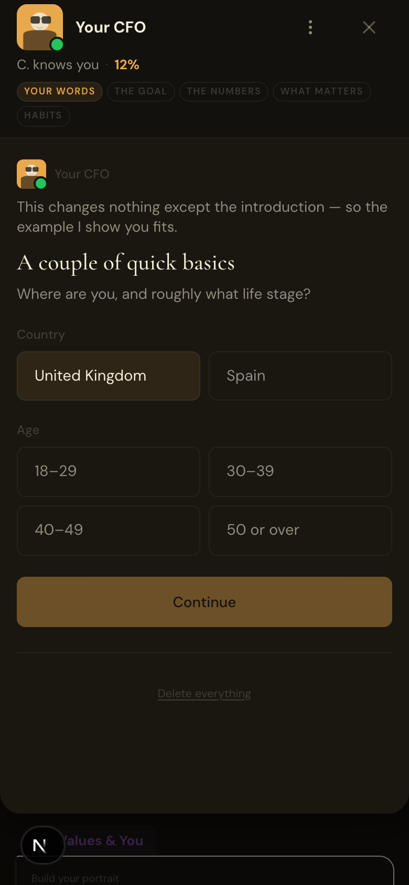
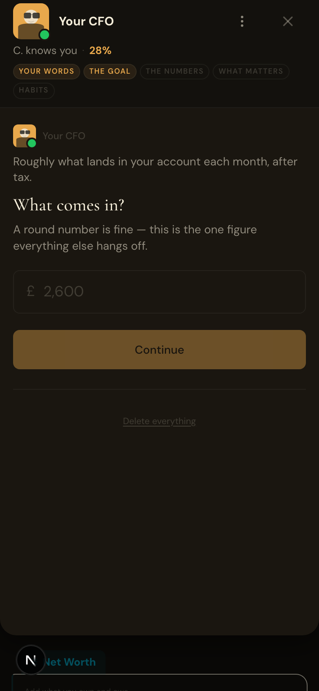
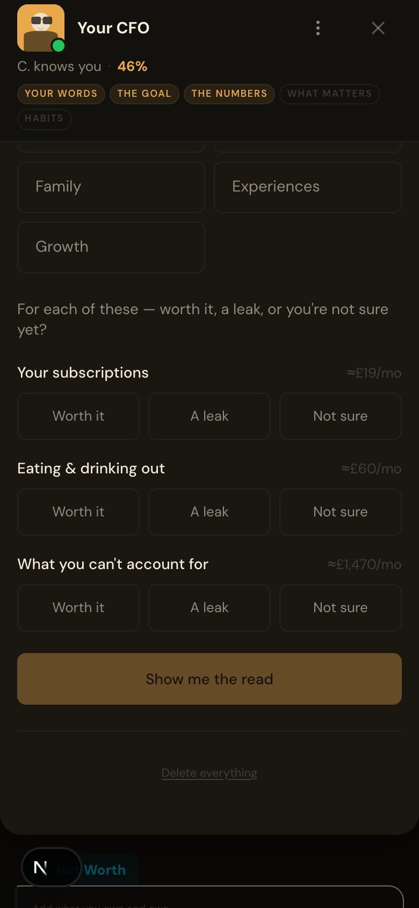
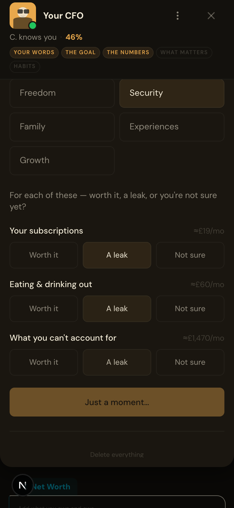
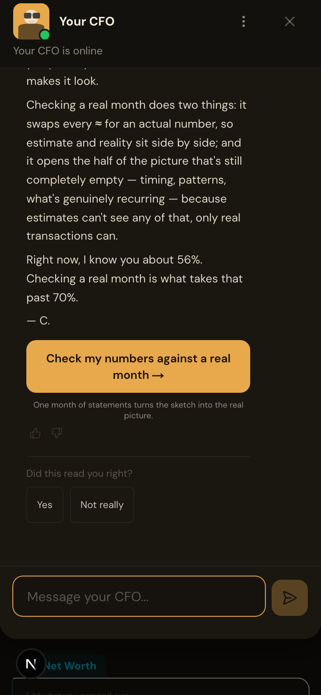

The Fortress — Saver fortress-saver
Functional: pass
LLM: pass
Visual: pass
32.7s
Screenshots







LLM judge
Hard rules
- [estimate] R1_no_banned_words
- [estimate] R1b_no_banned_patterns
- [estimate] R7_no_system_note
- [estimate] R6_no_goal_denial
- [estimate] R5_currency_symbol
- [estimate] R8_cta_vocabulary
- [estimate] R8b_cta_matches_read
- [estimate] R3b_read_mentions_one_of
- [estimate] R4_numbers_match_csv
- [estimate] H1_signoff_present — expected "— C." on its own final line
- [estimate] H2_within_word_cap — 228/250 words
- [estimate] H3_exactly_one_cta — 1 [CTA] block(s)
- [estimate] H4_no_options_block — retired [OPTIONS] chip format must not appear
- [estimate] H5_no_question_close — Checking a real month is what takes that past 70%.
- [estimate] H6_no_emoji
- [estimate] H7_voice_no_banned
Likert means
| Dimension | Score (1-5) |
|---|---|
| warmth | 5.0 |
| accuracy | 5.0 |
| on_brand | 5.0 |
| persona_fit | 5.0 |
| actionability | 5.0 |
Per-dimension reasons
- [estimateRead] warmth: 5/5 — Conversational, direct, uses 'the whole story' and 'the move is simple' — feels like a trusted peer explaining rather than prescribing.
- [estimateRead] accuracy: 5/5 — All figures are derived from user input (£2,650 take-home, £870 fixed base, £1,470 drift) with no external data invented; math is transparent and traceable.
- [estimateRead] on_brand: 5/5 — Uses tangible comparisons (≈37 months to £20k), avoids 'you should' language, frames drift as a named problem to investigate rather than preach about, and closes with a concrete next step.
- [estimateRead] persona_fit: 5/5 — Directly addresses the Fortress-Saver's top value (Security) by quantifying the deposit gap, validates their own framing ('you called it a leak'), and respects their caution with 'doesn't bite' language.
- [estimateRead] actionability: 5/5 — Proposes a specific standing transfer amount (£300), shows the outcome (37 months), and points to the exact next step (statement check) with clear reasoning for why it matters.
Captured
Estimate Read JSON
{
"conversationType": "first_read",
"content": "This is your sketch, not your statement — but even a sketch this rough tells me something worth acting on.\n\nYour take-home is £2,650. After a ≈£870 fixed base, that leaves ≈£1,780 free each month. The deposit is a direction right now, no deadline set — but the size of the gap between what you could save (≈£250/mo) and what's actually free (≈£1,780/mo) is the whole story. Most of that gap sits in ≈£1,470 of drift: money that leaves without a name.\n\nThe move is simple. Set up a standing transfer of ≈£300 on payday — about half the drift, so it doesn't bite. At that pace, a ≈£20,000 deposit lands in ≈37 months. Without it, the sketch puts you at ≈80. That's the difference one transfer makes.\n\nYou called the ≈£1,470 drift a leak. A real month says whether it is — or whether, as you put it, you save more than this sketch makes it look.\n\nChecking a real month does two things: it swaps every ≈ for an actual number, so estimate and reality sit side by side; and it opens the half of the picture that's still completely empty — timing, patterns, what's genuinely recurring — because estimates can't see any of that, only real transactions can.\n\nRight now, I know you about 56%. Checking a real month is what takes that past 70%.\n\n[CTA:start_statement_check]Check my numbers[/CTA]\n\n— C.",
"messageId": "b03e004e-d3c3-45d1-a787-38d9aecb6193"
}Reality-check Read JSON
null
DB state after handoff
{
"user_profiles": {
"id": "21cd4922-b1ce-4c03-b22c-ab65d6eea547",
"display_name": "Sam",
"country": "GB",
"city": null,
"primary_currency": "GBP",
"age_range": "30–39",
"employment_status": null,
"gross_salary": null,
"net_monthly_income": 2650,
"pay_frequency": "monthly",
"has_bonus_months": null,
"bonus_month_details": null,
"housing_type": null,
"monthly_rent": null,
"relationship_status": null,
"partner_employment_status": null,
"partner_monthly_contribution": null,
"dependents": 0,
"values_ranking": null,
"spending_triggers": null,
"risk_tolerance": null,
"financial_awareness": null,
"advice_style": "direct",
"nationality": null,
"residency_status": null,
"tax_residency_country": null,
"years_in_country": null,
"onboarding_completed_at": "2026-06-13T21:15:08.211+00:00",
"profile_completeness": 0,
"created_at": "2026-06-13T21:14:41.081667+00:00",
"updated_at": "2026-06-13T21:15:08.283589+00:00",
"nudge_preferences": {},
"savings_rate_target": null,
"budget_config": {},
"deleted_at": null,
"anonymised_at": null,
"onboarding_progress": null,
"capability_preferences": null,
"beta_cohort": null,
"is_lifetime_pro": false,
"entry_struggle": "dont_know",
"entry_struggle_text": null,
"entry_struggle_at": "2026-06-13T21:14:49.01+00:00",
"onboarding_route": null,
"onboarding_step": "first_read_delivered",
"value_map_offered_in_chat": false,
"value_map_declined_in_chat": false,
"goals_last_synced_at": "2026-06-13T21:14:46.968+00:00",
"income_shape": null,
"income_volatility": null,
"income_shape_deposit_count": null,
"income_shape_detected_at": null,
"financial_posture": null,
"posture_confidence": null,
"runway_days": null,
"t3m_income_monthly": null,
"t3m_spend_monthly": null,
"balance_trajectory": null,
"posture_detected_at": null,
"door_family": "candor",
"door_confidence": null,
"door_reflection": "Stopped looking is honest — most people lie about that one.",
"door_source": "chip",
"composite_persona_key": "candor_gb",
"composite_relate": "close",
"composite_repick_family": null,
"composite_truer_line": "I save more than this sketch makes it look"
},
"financial_portrait": [],
"onboarding_progress": null,
"onboarding_estimates": {
"id": "d8d15de0-c47f-43f9-ae76-81c14f7e71ef",
"user_id": "21cd4922-b1ce-4c03-b22c-ab65d6eea547",
"currency": "GBP",
"housing_band": "a",
"subs_band": "low",
"bills_band": "a",
"food_out_band": "a",
"save_reach_band": "c",
"income_monthly": 2650,
"top_value": "Security",
"verdicts": {
"drift": "leak",
"food_out": "leak",
"subscriptions": "leak"
},
"derived": {
"drift": 1470,
"tight": false,
"freeCash": 1780,
"fixedBase": 870,
"remaining": 20000,
"leverAmount": 300,
"paceVerdict": null,
"saveMonthly": 250,
"subsMonthly": 19,
"actionBranch": "payday_boost",
"billsMonthly": 150,
"starterAmount": null,
"engine_version": "v1",
"foodOutMonthly": 60,
"housingMonthly": 700,
"monthsAtBoosted": 37,
"monthsAtCurrent": 80,
"requiredMonthly": null,
"requiredPctOfIncome": null
},
"verification": {},
"created_at": "2026-06-13T21:14:50.731469+00:00",
"updated_at": "2026-06-13T21:15:01.018779+00:00"
},
"transactionCount": 0,
"assistantMessageContents": [
"This is your sketch, not your statement — but even a sketch this rough tells me something worth acting on.\n\nYour take-home is £2,650. After a ≈£870 fixed base, that leaves ≈£1,780 free each month. The deposit is a direction right now, no deadline set — but the size of the gap between what you could save (≈£250/mo) and what's actually free (≈£1,780/mo) is the whole story. Most of that gap sits in ≈£1,470 of drift: money that leaves without a name.\n\nThe move is simple. Set up a standing transfer of ≈£300 on payday — about half the drift, so it doesn't bite. At that pace, a ≈£20,000 deposit lands in ≈37 months. Without it, the sketch puts you at ≈80. That's the difference one transfer makes.\n\nYou called the ≈£1,470 drift a leak. A real month says whether it is — or whether, as you put it, you save more than this sketch makes it look.\n\nChecking a real month does two things: it swaps every ≈ for an actual number, so estimate and reality sit side by side; and it opens the half of the picture that's still completely empty — timing, patterns, what's genuinely recurring — because estimates can't see any of that, only real transactions can.\n\nRight now, I know you about 56%. Checking a real month is what takes that past 70%.\n\n[CTA:start_statement_check]Check my numbers[/CTA]\n\n— C."
],
"recurringNames": [],
"goalsCount": 1
}